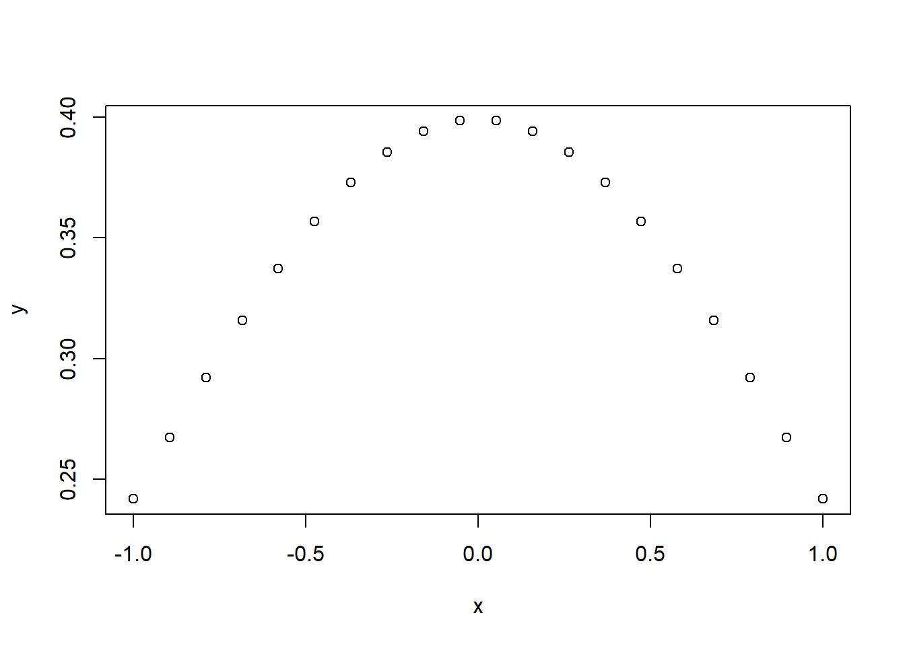

For this R Module, we’ll be taking on the role of …
Markdown is a popular “markup language” designed to format plain-text data, such as comments on many websites and documentation for code. In text editors like Microsoft Word or Google Docs, called “What you see is what you get (WYSIWYG)” editors, there are buttons for making text italic, bold, underlined, etc., but it’s often difficult to transfer that information from one editor to another; if you copy italic text from a Word document into a program like Notepad, you lose all your formatting.
Markdown, however is designed to be a “What you type is what you get (WYTIWYG)” language. If you want to italic text, you wrap your text with single *asterisks* or _underscores_. If you want bold text, you **use** __two__, and you can combine them with ***three***.
There are a ton of other formatting options available, such as lists, links, etc. This module isn’t intended to teach Markdown, but rather a variant called R Markdown. For more information regarding Markdown, you can use sites like Handbook’s Markdown Guide or resources such as Stack Overflow.
R Markdown is a variant of Markdown that is designed to work with R code. In addition to all of the standard Markdown formatting rules, R Markdown allows you to embed and run R code directly in your document, in sections called code chunks. This lets you not only run your code, but generate a document with text as well; perfect for writing up labs! Once you get the hang of R Markdown documents, you won’t want to write up reports in Word anymore. Rather than endlessly take screenshots and paste into a document, you can embed your code in an R Markdown document, and it’ll insert the plots and graphs that you generate directly, like this:
```{r code-example}
x <- seq(-1, 1, length = 20)
y <- dnorm(x)
plot(x, y)
```Which gives you:

Or, if you want to print a table, you can use:
```{r table}
head(mtcars)
```Which gives:
## mpg cyl disp hp drat wt qsec vs am gear carb
## Mazda RX4 21.0 6 160 110 3.90 2.620 16.46 0 1 4 4
## Mazda RX4 Wag 21.0 6 160 110 3.90 2.875 17.02 0 1 4 4
## Datsun 710 22.8 4 108 93 3.85 2.320 18.61 1 1 4 1
## Hornet 4 Drive 21.4 6 258 110 3.08 3.215 19.44 1 0 3 1
## Hornet Sportabout 18.7 8 360 175 3.15 3.440 17.02 0 0 3 2
## Valiant 18.1 6 225 105 2.76 3.460 20.22 1 0 3 1Before we do anything with R Markdown, we need to do a bit of setup to make sure that R Studio is good-to-go in a few ways.
First, if you haven’t already, install R Tools. This software is used when installing packages, and makes things a lot easier. For Windows, you can navigate to: https://cran.r-project.org/bin/windows/Rtools/rtools40.html
Download the 64-bit version, and install the software. Note that this requires admin privileges. This step isn’t strictly necessary; R tools is used to build packages that are “in development”, but it’s useful to have if you can.
After that, we’ll need to install a few R packages:
rmarkdown, knitr, markdown,
and mime: These allow R Studio to work with Markdown and R
Markdowntinytex: This package is a lightweight \(\LaTeX\) distribution and is necessary to
export as a .PDF
tinytex::install_tinytex(). This step might take some
time.To get things running, you can just run the following code:
Then, restart R Studio.
Let’s get started by creating a new R Project, as in previous R
Modules. Once you have that set up, we want to create a new R Markdown
document. Navigate to File > New File > R Markdown.
Give it a title, “R Module 4 Write-up”, enter your name, and select
PDF as the output format.
dplyrggplot2© 2022 brownhr & M. Sugg. v.0.0.10